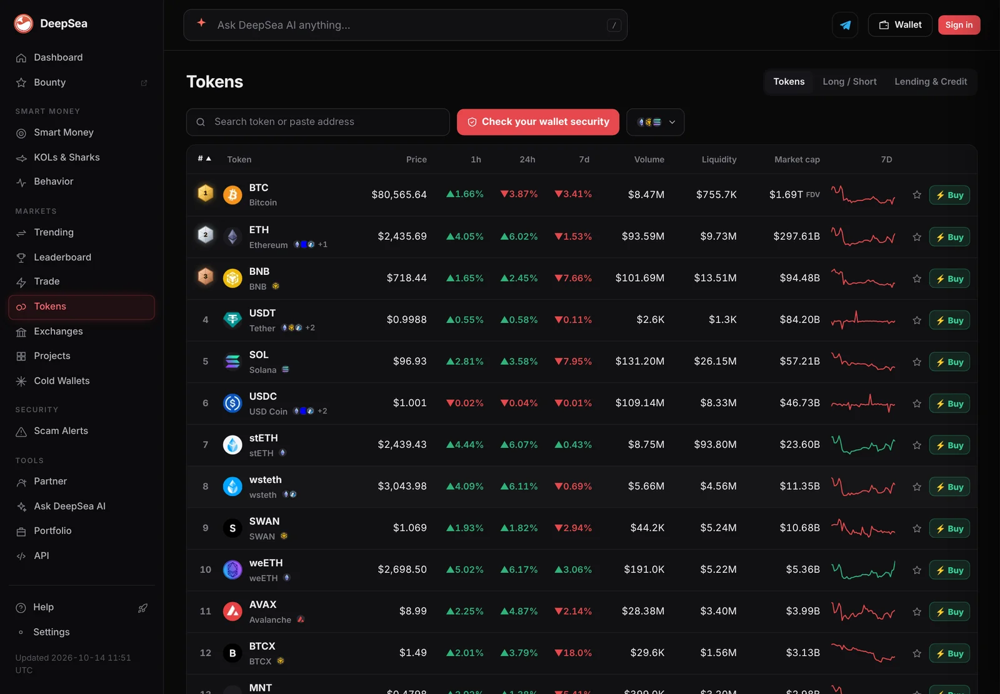
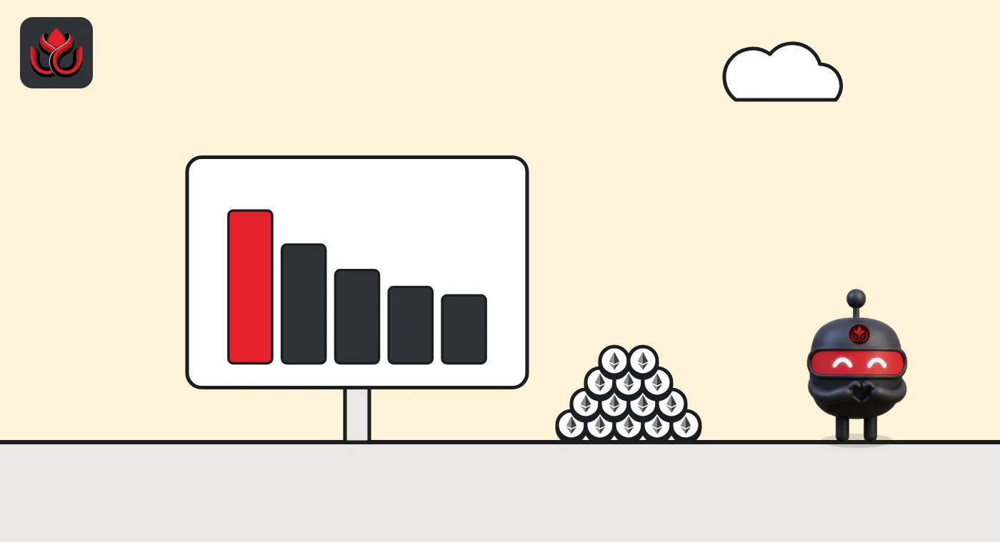
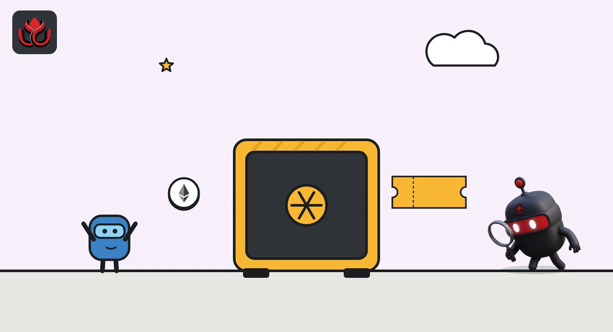

What is staking? How proof-of-stake rewards work and how you can lose money
Staking means locking tokens to help run a proof-of-stake blockchain, in return for rewards paid in that token. The stake is collateral: validators that go offline lose a little, and on Ethereum those that break the rules can be slashed.
Key points
- Staking locks tokens as collateral so validators can propose and check blocks on a proof-of-stake chain, and rewards are paid in that chain's own token.
- On Ethereum and Hyperliquid the reward rate falls as more is staked. Solo Ethereum staking needs 32 ETH; pools, providers and exchanges take less but ask for more trust.
- The main risks are penalties and slashing, lockups and exit queues, smart contract and custody risk, and dilution when rewards are new supply.
 What DeepSea's data shows
What DeepSea's data shows
Liquid staking tokens are now among the largest assets in crypto. On November 2, DeepSea's tokens list ranked Lido's stETH seventh by market cap at $21.99 billion, just behind USDC. Other receipt tokens for staked ether on the same list included weETH at $5.01 billion, cbETH at $1.01 billion and rETH at $815.68 million.
Staking is not only an Ethereum habit: DeepSea also listed slisBNB, a liquid staking token for BNB, at $710.85 million. Some of these tokens wrap one another, so their values should not simply be added up.

Data: DeepSea (desea.io), checked November 2, 2026, 12:57 p.m. ET.
What is staking?
Staking means locking tokens to help run a proof-of-stake blockchain, in return for rewards. Proof of stake is a way for a blockchain to agree on which transactions are valid without energy-heavy mining: instead of computing power, participants called validators put up tokens as collateral.
Ethereum's own staking page describes it simply: you deposit ETH to activate a validator, which proposes new blocks and checks the work of other validators. Honest work earns ETH rewards. Going offline costs small amounts of ETH, and provable misbehavior leads to slashing and removal from the network.
The collateral is the point. A validator that cheats has something to lose, so the network does not need to trust it.
As of November 2, 2026, ethereum.org's staking page showed about 43.9 million ETH staked, which it put at 35% of all ETH, and a current reward rate (APR) of about 2.5%. The page shows no timestamp for these figures, and they change constantly.
How do staking rewards work?
Rewards are paid in the chain's own token, and on most networks the rate is not fixed. It depends on how much is staked and how well a validator does its job.
On Ethereum, each validator has a base reward that shrinks as the total amount staked grows. Ethereum's developer docs on rewards and penalties say the base reward scales with one over the square root of all staked ETH. So total issuance rises as more ETH is staked, while each validator earns less.
The base reward is split across duties. Voting on the right checkpoints and the head of the chain makes up most of it, with smaller shares for proposing blocks and serving on sync committees. Voting late cuts the reward. A validator that misses its source or target votes is penalized about what it would have earned. Missing the head vote only costs the reward.
Hyperliquid uses a similar idea. Its staking docs say the HYPE reward rate is inversely proportional to the square root of total HYPE staked, about 2.37% a year at 400 million HYPE staked. Rewards come from a future emissions reserve, accrue every minute, are paid daily and are restaked automatically.

How can you stake?
Ethereum's staking page lists several routes, from most control to most trust:
- Solo staking. You run your own validator and hold your own keys. It needs at least 32 ETH and a dedicated computer that stays online.
- Staking as a service. You still deposit 32 ETH, but an operator runs the node and holds the signing keys, for a fee.
- Pooled staking. Pools accept much smaller amounts, some as little as 0.01 ETH. Rewards go to the pool's validators, and the pool passes them on.
- Centralized exchanges. The exchange holds your ETH and stakes it. Ethereum's page calls this the option with the highest trust assumptions.
Many chains also let you delegate, meaning you assign your tokens to a validator someone else runs. On Hyperliquid, you move HYPE into a staking account and delegate it to one or more validators, which can charge a commission. A validator needs 10,000 HYPE of its own stake to be active.
What is liquid staking?
Staked tokens are normally locked. Liquid staking pools hand you a token that represents your stake plus your share of rewards. Ethereum's staking page says you can hold, trade or use these tokens in DeFi, and that staking and unstaking become as simple as a swap.
The underlying validators still sit in the same entry and exit queues, so the liquid token can trade away from the value of the stake behind it. It also adds smart contract risk, because the pool's code controls the deposits. Restaking goes one step further and pledges the same stake to secure extra services, with extra slashing risk. Our guide to restaking and EigenLayer explains how.

What is slashing?
Slashing is the penalty for provable cheating. On Ethereum, the rewards and penalties docs name three offenses: proposing two blocks for the same slot, and two kinds of contradictory votes. They are the actions that could help attack the chain.
A slashed validator first loses a small part of its stake (the docs give 0.0078 ETH for a 32 ETH validator, scaled to its balance, which works out to 1/4,096) and is forced out over 36 days. Halfway through, a second penalty applies that scales with how many other validators were slashed in the same window. An isolated mistake costs little. A mass slashing, for example many validators run by one operator with the same bad setup, can cost the full stake.
Ethereum also has an inactivity leak. If the chain fails to finalize for more than four epochs, offline validators bleed stake until online ones control more than two-thirds again.
Not every chain slashes. Hyperliquid's docs say there is currently no automatic slashing. Its validators can instead be jailed for poor responsiveness, and a jailed validator earns no rewards for its delegators.
What are the risks of staking?
- Penalties and slashing. Your stake backs a validator's behavior. If you delegate, you share the risk of the operator's mistakes.
- Lockups and queues. Getting out takes time. On Hyperliquid, delegations have a 1-day lockup, and moving HYPE back to a spot account goes through a 7-day unstaking queue. Ethereum exits go through a queue too. Prices can move while you wait.
- Counterparty and custody risk. With a provider, pool or exchange, you trust someone else with keys or funds. Ethereum's staking page flags key misuse by operators and custody risk at exchanges.
- Smart contract risk. Liquid staking and restaking depend on code that can have bugs.
- Dilution. When rewards are newly issued tokens, stakers mostly keep pace with supply growth while non-stakers are diluted. A reward rate is not the same as a profit, and it is paid in a token whose price can fall.
- Centralization. Ethereum's page warns that large centralized pools create a single point of failure for the network.
How is staking different from token unlocks and emissions?
Staking rewards are one form of emissions: new tokens paid out over time. Unlocks are different. They release tokens created at launch that were locked for teams or investors. Both add to circulating supply. Our guide to token unlocks explains how to read the two side by side.
This also explains why staking rates fall as participation grows on Ethereum and Hyperliquid. The design pays a higher rate when stake is scarce, to attract more security, and a lower one when plenty is already locked.
LC Insight analysis
This section is our reading of the facts above, not a statement of fact.
- We think the reward rate is the least important number to look at. What decides outcomes is who holds the keys, how long it takes to exit and whether the chain can slash your stake for someone else's mistake.
- Slashing rules differ a lot between chains. Ethereum punishes correlated failures hardest, which makes operator concentration a real risk for anyone using a big provider, while Hyperliquid currently relies on jailing instead.
- Staking yields paid from new issuance mostly offset dilution rather than create new value. Anyone comparing rates across chains should set them against each chain's supply growth.
What's next
- The share of ETH staked and the current APR on ethereum.org
- Whether Hyperliquid turns on automatic slashing
- Exit queue lengths on Ethereum during market stress
- Concentration of stake in the largest pools and exchanges
Frequently asked questions
How much ETH do you need to stake?
Solo staking needs at least 32 ETH and a computer that stays online, per ethereum.org. Pooled staking accepts much smaller amounts, some as little as 0.01 ETH.
Can you lose money staking?
Yes. Validators lose small amounts when offline and can be slashed for provable misbehavior on Ethereum. The token's price can also fall while it is staked or waiting in an exit queue.
Is staking the same as lending?
No. Staking locks tokens to secure a blockchain and earns protocol rewards. Lending gives tokens to a borrower or a lending pool in exchange for interest.
How long does it take to unstake HYPE?
Hyperliquid's docs describe a 1-day lockup on delegations and a 7-day unstaking queue to move HYPE back to a spot account.
What is a liquid staking token?
A token a pool gives you that represents your staked tokens plus rewards. You can hold or trade it, but it adds smart contract risk.
Disclaimer. This article is based on public information and the sources listed below as of the update time shown. It is for information only and is not investment, legal or tax advice. Figures may change as companies and authorities publish new data.